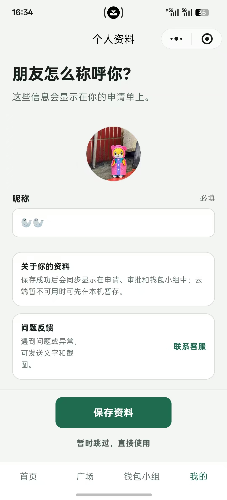
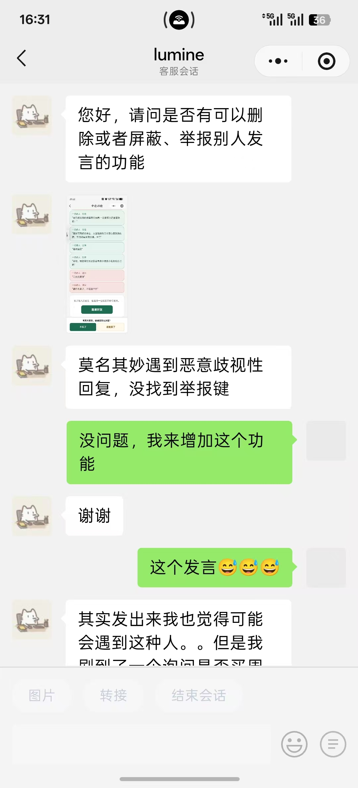

01 / SAY IT CLEARLY
发起消费申请
先别付款。
把商品、价格、为什么想买，
以及有没有可以替代的东西写下来。
把一个模糊的「好想买」，
变成一个可以被讨论的问题。

A BETTER WAY TO DECIDE
给冲动消费，
加一个暂停键。
买之前，
先问问朋友。
从朋友意见到最终决定，把一次“好想买”变成可以重新思考的消费路径。


说明 → 分享 → 听意见 → 再决定
真要买吗不是替用户决定买不买，
而是在付款之前插入一次：
说明 → 分享 → 听意见 → 再决定。
01 / SAY IT CLEARLY
先别付款。
把商品、价格、为什么想买，
以及有没有可以替代的东西写下来。
把一个模糊的「好想买」，
变成一个可以被讨论的问题。
02 / ASK SOMEONE
申请完成后，分享给朋友，
或者发到自己的钱包小组。
一个人纠结的时候，
很容易只听见自己想买的理由。
所以第二步不是继续想，
而是找一个外部视角。

03 / GET PERSPECTIVE
朋友可以批准、驳回，
或者劝你先冷静一下。
他们提供的是不同角度，
而不是替你做决定。

04 / YOU DECIDE
批准、驳回、冷静一下，
都只是朋友的意见。
最终的「不买了」或「还是买了」，
始终由申请人自己选择。

07 / WALLET GROUP
WHY WALLET GROUP
当用户一次次把消费申请发给同一群朋友时，
产品就不再只是“一次找人帮我看看”，
而是逐渐形成了一种长期存在的消费决策关系。
钱包小组不是更多人替你决定，
而是把“下次再问谁”这件事固定下来。
01 / FIX THE PEOPLE
创建或加入钱包小组，
把那些本来就会互相劝消费的熟人留在同一个地方。
这样下一次犹豫时，
不用重新找人、重新解释、重新建立上下文。
从一次分享，变成固定关系。
02 / ASK INSIDE THE GROUP
进入小组后，用户可以直接在这个关系里
继续发起新的消费申请。
“帮我看看”不再是临时分享，
而变成一种长期存在的协作方式。
不是重新邀请一遍朋友，
而是在已有关系里继续发起。
03 / ONGOING PARTICIPATION
成员不仅能持续看到新的消费申请，
也能看到这个月的花钱状态、最近发生的记录。
这不再只是一次审批，
而是一段长期存在的消费协作关系。
一次求助，变成持续参与。
04 / YOU STILL DECIDE
小组成员会从不同角度给出意见：
可以买、别买、再忍忍。
朋友提供外部视角，
最终决定仍然属于申请人自己。
多人参与，不等于替你做决定。


我的钱包小组
06 / USER-DRIVEN ITERATION
它是在被使用以后，
才开始变得具体。
MVP 上线后，我建立了一个真实用户测试群。用户会直接反馈看不懂、点不开、找不到，甚至质疑现有流程。我把这些声音重新转化为产品问题，再判断哪些应该修改，哪些不能简单照着要求实现。




CASE 01 · HISTORY & VISIBILITY
CASE 01
“没结束也能看到其他人的评论吗？”
我已经做完决定，为什么这条申请就像消失了一样？
最初流程把“审批完成”理解成“任务结束”。但用户还想知道后来大家怎么说、自己当时为什么这样决定。
消费决定不是一次性操作。它还具有回顾价值。
新增历史记录，并重新整理已完成申请的查看逻辑。完成决定以后，仍然可以回看申请和相关反馈。
从“完成一次审批”，
变成“留下一个决策记录”。
CASE 02
“不审核的人也能看到其他人提的意见。”
我不一定要马上表态，但我想先理解这里正在发生什么。
原来的设计把“查看意见”和“参与审批”绑定在一起。但参与讨论，并不等于必须立即表态。
“查看”和“做决定”应该是两个不同动作。
重新整理待审批、查看大家意见与历史记录之间的关系，让用户不需要完成审批，也能理解当前讨论。
不是所有进入页面的人，
都必须立刻做决定。
CASE 03
“添加的图片我点不开。你们能点开吗？”
这个商品图片点不开，我没办法看清它。
最初我把图片当成申请里的补充信息，但在真实购物场景里，图片本身可能就是判断商品的重要依据。
如果商品信息看不完整，后面的批准、驳回或冷静一下，就失去了判断基础。
完善商品图片从上传、展示、点击预览到查看完整商品信息的整个链路。
用户不是在测试功能。
他们是在真的拿它做消费决定。
CASE 04
用户从“我的”页面进入问题反馈，点击联系客服后，直接与产品开发者沟通。
实际会话中，用户明确提出了删除、屏蔽与举报恶意回复等功能需求，并补充了具体使用场景。
客服入口不只是答疑通道，也是持续理解真实使用体验、识别产品问题的一手入口。
用户说明问题 → 开发者理解上下文 → 判断是使用说明、问题修复还是功能迭代 → 进入后续产品决策。
让真实使用中的问题，
直接回到产品决策里。
08 / TRY IT
《真要买吗》微信小程序已经正式上线。
发起一笔消费申请，邀请朋友帮你看看，
或者和熟人建立一个长期的「钱包小组」。
看看下一次准备付款之前，会不会多一次重新想想的机会。
QR CODE扫码体验「真要买吗」
微信小程序 · 可直接体验买不买，
先问问自己，
也问问重要的人。